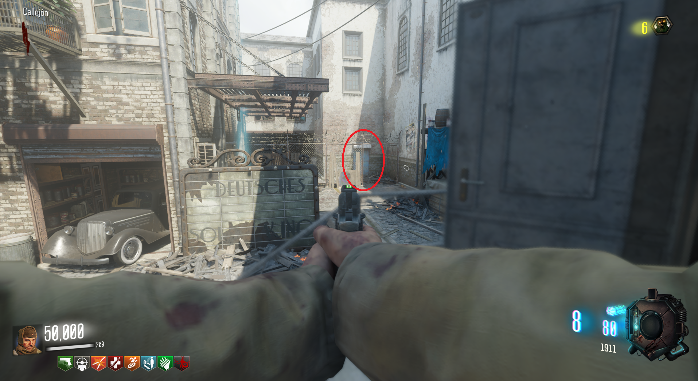
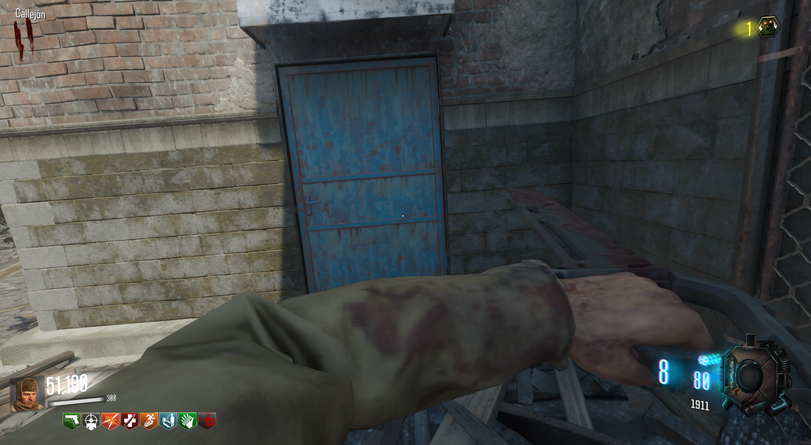

Reproducir canción
Para reproducir la canción debemos de ir a la calle y escuchar golpes en la puerta.

Tendremos que memorizar los golpes que escuchamos, serán 3 números.
Luego repetiremos los golpes acuchillando la puerta.

En total habrá que hacer esto 3 veces.
Algunas de las posibles combinaciones son estas:
115 512
143 534
241 624
321 666
935